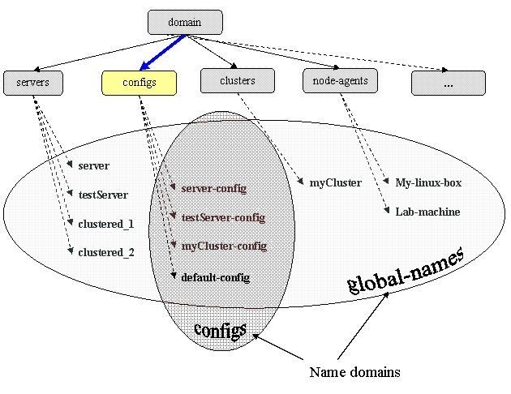
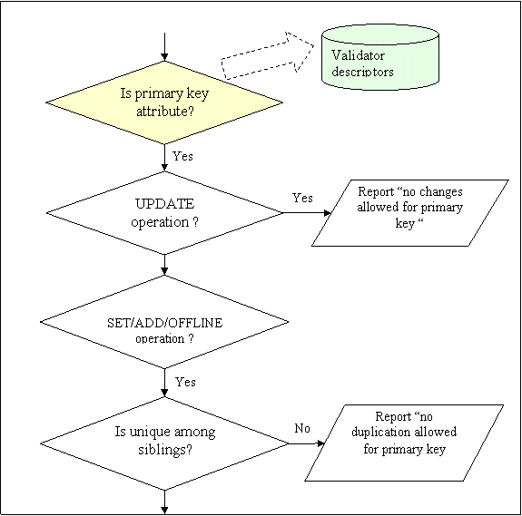

| Return to GlassFish Configuration Management Page | GlassFish Project Home | How-Tos |
GlassFish application server has complex configuraion with the number of restrictions applied to element names and multiple internal references between elements of different types. Such configuration could be easily corrupted (e.g. by having "unresolved" references, name duplications etc.). The task of validation for such configurations becomes really comlex and difficult to maintain.
Proposed method and imlementation provides generic metadata driven way (using name lists) to prevent name and reference inconsistencies. Introduced extentions to XML schema and new metadata element - name lists (name domains) provide simple way to describe and maintain element integrity of names and references in the configuration.
Many configuration elements defined in domain.xml have primary key attributes ("name", "id", "jndi-name" etc.). We'll use term "element name" or even "name" for referencing to such keys in this document. These names allow distinguishing and addressing of specific elements among their siblings. Two generic validation procedures are related to names: uniqueness/duplication check and integrity of internal references.
Usually, names should be unique among names of the same type config elements. For example, the value of the "name" attribute for the "server" element is its primary key, and there are no two server elements with the same name. Besides that, Glassfish often requires uniqueness of names among elements which have not the same type (e.g. all types of resources: jdbc, custom, mail etc.) or even belong to different parents. For example, there is consideration that the same name can not be used for any two elements of "server", "config", "cluster", and "node-agent" types (so called "global names"). All names in the following config fragment should be also unique among all web modules, ejb modules, and j2ee applications.
<applications>
<j2ee-application … name="MEjbApp" object-type="system-all"/>
<ejb-module … name="ludo" object-type="user"/>
<web-module … name="adminapp" object-type="system-admin" />
<web-module … name="admingui" object-type="system-admin">
………
</applications>
|
Name uniqueness support is the Config Validator responsibility. Eeach time a named element is creating, or the name attribute value is about to be changed for existing element, the Validator checks new name value for duplication in its scope.
Another aspect of names validation is providing integrity of internal references in domain.xml configuration file. There are plenty of config elements having the attributes with values equal to names of other elements from the same domain.xml file. Such "foreign" primary keys are called "reference to element" or simply "reference". Examples of references: "pool-name" attribute in "jdbc-resource" element; "default-virtual-server" in "http-listener" element. Some values representing list of references, like "http-listeners" in "virtual-server":
<virtual-server hosts="${com.sun.aas.hostName}"
http-listeners="http-listener-1,http-listener-2"
id="server" state="on" />
|
There are special referencing sub-elements which are binding other elements to owner, e.g. resources and applications to server or cluster - resource-ref, cluster-ref:
<server config-ref="server-config" lb-weight="100" name="server">
<application-ref enabled="true" ref="adminapp" virtual-servers="__asadmin"/>
<application-ref enabled="true" ref="admingui" virtual-servers="__asadmin"/>
<application-ref enabled="true" ref="MEjbApp" virtual-servers="server"/>
…
<resource-ref enabled="true" ref="jdbc/__TimerPool"/>
<resource-ref enabled="true" ref="jdbc/__CallFlowPool"/>
<resource-ref enabled="true" ref="jdbc/__default"/>
</server>
|
Every time, when referenced element is added, removed, or its primary key is changed, Config Validator checks if after change done, there will be no unresolved references. Of course, the same check should be performed in the case of change of referencing attribute value.
In GlassFish, every config element is described by its .rng schema file. We use elements' schemas to provide Config Validator with necessary data for most attributes validation test cases. For names validation, we added extensions to those schemas, informing Validator that certain attributes are names and therefore subjects for uniqueness and referencing integrity tests. All such extensions are defined in the separate namespace (xmlns:ias=http://www.sun.com/ias/validation). There are three of such extensional schema attributes related to names validation: ias:type, ias:belongsTo, and ias.referencesTo.
In the following fragment is the part of jms-host element schema. The attribute "name" is declared as primary key (ias:type="key") for the element and Config Validator will prevent creation of the duplicates among all jms-host elements belonging to the same jms-service element (siblings).
<define name="jms-host-attlist" combine="interleave">
<attribute name="name" ias:type="key">
<ref name="name-type"/>
</attribute>
………
</define>
|
There is one more usage of describing attribute as key. In Glassfish configuration infrastructure, element name is widely used in XPath expressions and MBean ObjectNames. So, to avoid confusions, such attributes can not be changed and will be declared as "read only" attributes in MBeans APIs.
As mentioned before, GlassFish configuration has plenty of name uniqueness requests beyond the scope of only sibling elements. For example, names for configs, servers, clusters, and node agents should be unique in domain among these elements. I.e. for example, it is prohibited to have any server and node agent in domain to have the same name. To maintain such complex requests we introduced "name lists" (in earlier documents - "name domains").
Name list - named set of values of certain attributes of specified element types. The following picture presents two name lists defined in the sample configuration - "configs" and "global-names". "Configs" name list in this sample consists of four config names: "server-config", "testServer-config", "myCluster-config", and "default-config". The "global-names" name list has 10 names, representing name values of all servers, configs, clusters, and node-agent elements defined in domain.xml.

Figure 1. "Configs" and "global-names" name lists
Name domains are defined in name-domain xml description file. For example, the name lists from above sample can be represented in this file by the following xml elements:
<name-list name="global-names" scope="/"
full-name="List of global names - servers, clusters, configs ...">
<forms-from xpath="/domain/configs/config[*]/@name"/>
<forms-from xpath="/domain/servers/server[*]/@name"/>
<forms-from xpath="/domain/clusters/cluster[*]/@name"/>
<forms-from xpath="/domain/node-agents/node-agent[*]/@name"/>
</name-list>
<name-list name="servers" scope="/"
full-name="List of config names" >
<forms-from xpath="/domain/configs/config[*]/@name"/>
<referenced-by xpath="/domain/servers/server[*]/@config-ref"/>
<referenced-by xpath="/domain/clusters/cluster[*]/@config-ref"/>
</name-list>
|
Name list entry can have following attributes and sub-elements:
Please note, that the donor attribute for "configs" name list, which forms this name domain, also participates in forming of the "global-names" domain. We will consider both "donor" and "referencing" attributes detailed later in this document.
In many cases, both uniqueness and referencing requirements for attribute value are limited only for descendants of the specific node. For example, "virtual-servers" name list should be formed and checked only for elements' attributes belonged to the same config element. Let's see how scope attribute in name-list element allows handling this fact:
<name-list name="virtual-servers"
full-name="list of virtual servers defined in config"
scope="/domain/configs/config/">
<forms-from xpath="/domain/configs/config[*]/http-service/virtual-server[*]/@id"/>
<referenced-by xpath="/domain/configs/config[*]/http-service/
http-listener[*]/@default-virtual-server"/>
</name-list>
|
Both "forms-from" and "referenced-by" sub-elements are actually generated entries in the name list description. They are produced by XSLT script from config elements .rng schema files. Two additional extension attributes - "belongs-to" and references-to" are used in config element attribute definition to define name lists' "donor" and referencing attribute values correspondently. The following element schema fragment demonstrates the usage of all three .rng-extension attributes: "type", "belongs-to", and "references-to":
<define name="jdbc-resource-attlist" combine="interleave">
<attribute name="jndi-name" ias:type="key"
ias:belongs-to="jndi-names,jdbc-resources">
<ref name='jndi-unique-type'/>
</attribute>
<attribute name="pool-name"
ias:references-to="jdbc-connection-pools"/>
… … …
</define>
|
<define name="server-attlist" combine="interleave">
<attribute name="name"
ias:type="key"
ias:belongs-to="global-names,servers">
… … …
</attribute>
<optional>
<attribute name="config-ref" ias:references-to="configs"/>
</optional>
<optional>
<attribute name="node-agent-ref"
ias:references-to="node-agents"/>
</optional>
… … …
</define>
|
As mentioned above, Config Validator uses name lists to perform name uniqueness and reference integrity tests. All name lists described in names-domain.xml files are generated and accessed through special manager class - NameListMgr. Basicly, NameListMgr provides the following testing methods to Validator:
Parameter "xpath" in above signatures represents xpath address for attribute providing the value for the test. The value of "xpath" parameter plays two significant roles: to retrieve proper name list for testing and to ignore "own" attribute values in lists.
When scope for name list is not equal to "/" or "/domain/" (whole config tree), than one name list description produces a number of separate lists, one for every scope defined sub-tree (for example, if scope for the list is "/domain/configs/config[*]", then separate name list will be created for each config in domain). So, internal name for particular name list will be combination of declared name list (from names-domain.xml) and scope sub-tree root xpath address value (e.g. /domain/configs/config[@name='myConfig'] ). Name list manager uses xpath parameter value to extract sub-tree root address according to list scope.
Sometimes, e.g. during offline validation, testing attribute value could be found in name list, but this is not duplication case, because this value was taken to name list from the same (testing) attribute. To ignore such "duplication with self" cases, values in name lists are stored along with the xpathes of the origin attributes, used for list generation. Strictly speaking, the name lists implementation allows to store more than one instance of the same name value, if their associated xpath addresses are different. So, actual support of uniqueness and reference integrity is responsibility of the Validator.
The following three diagrams represent attribute validation process based on name related metadata usage (primary keys and name lists). It is performed by Config Validator before config change for an element is about to be done.

Figure 2. Primary key value validation.

Figure 3. "Donor" attribute validation.

Figure 4. "Referencing" attribute validation.